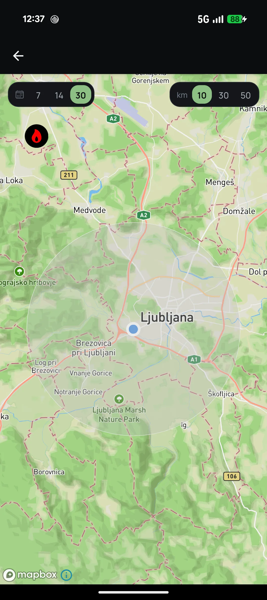

Mobile app
Birds
discover the birds around you
01 About
Growing up watching David Attenborough's documentaries, I developed a fascination with wildlife and the natural world. Years later, that curiosity led me to birdwatching and exploring the wildlife around me. When I found existing tools for tracking bird sightings unnecessarily complicated, I decided to build a simpler, more intuitive alternative using e-birds free API.
02 Stack
- Core
- ExpoExpress.jsMongoDB
- Maps platform
- Mapbox
- Data
- e-bird platform
03 Features
- Connecting to e-bird
- Discovering and searching birds by taxonomy
- Explore selected bird details
- Explore nearby sightings in last x days by species
- See yearly graphs of sightings*
- Add a sighting*
Now I can easily track e-bird sightings in my area, with future plans to track my own sightings with different charts.
App gallery
Swipe or click to enlarge


